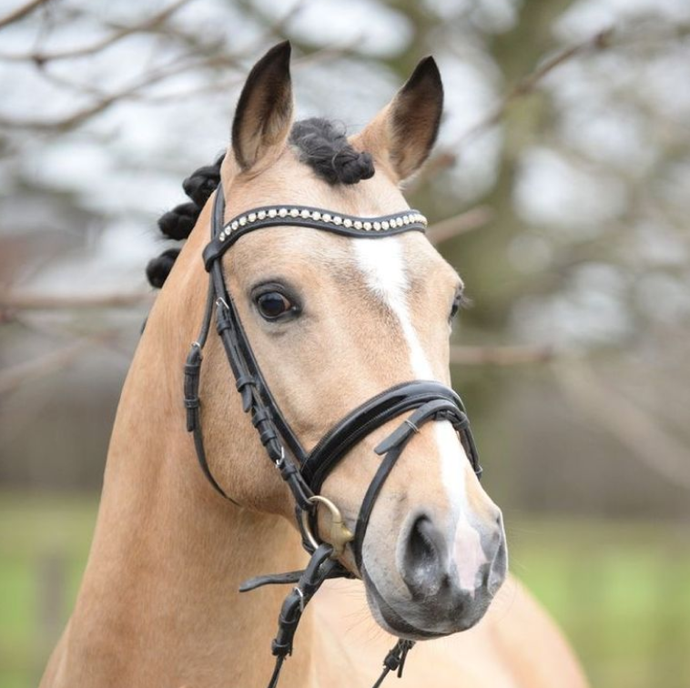

O KONJIH:
Na naši kmetiji živijo konji z različnimi značaji in talenti. Nekateri so zanesljivi spremljevalci za učenje in rekreativno jahanje, drugi pa tekmovalci s pravo športno žilico. Vsak od njih je del naše družine in vsak ima svojo zgodbo. Pridi jih spoznat!
Rojen: 2012
Rasa: Hanoveranec
Obožuje: korenje in blatne kopeli
MARTIN
Rojena: 2010
Rasa: Frizijec
Obožuje: česanje grive in tiho družbo
BLOOM
Rojena: 2013
Rasa: Lipicanka
Obožuje: dresuro in jabolka
BIANCA
Rojena: 2016
Rasa: Appaloosa
Obožuje: tekanje in poziranje
SUSHI
Rojen: 2014
Rasa: Andaluzijec
Obožuje: galop čez polja in sončenje
MERLOT
Rojena: 2011
Rasa: Quarter Horse
Obožuje: dotike in druženje z otroki
ROSE

Rojen: 2015
Rasa: Haflinger
Obožuje: valjanje po travi in pozornost
DAVE
Rojena: 2017
Rasa: Welsh Pony
Obožuje: skakanje in korenje
FLORA
“Konji niso le del našega vsakdana, so naši partnerji, učitelji in zavezniki.”